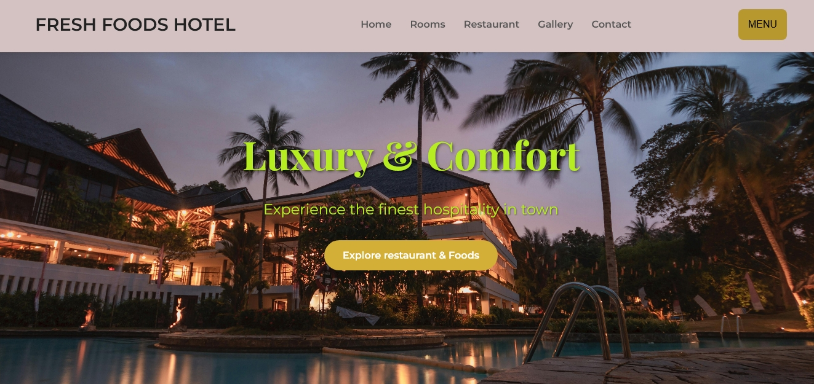
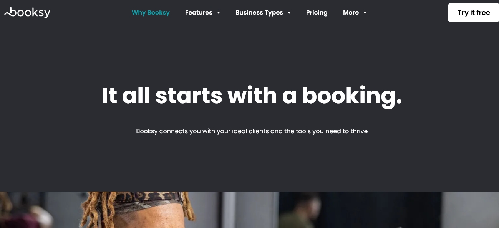

Creative Web Designer & Front-End Developer
Hi! I’m John, a passionate web designer dedicated to creating engaging and intuitive digital experiences. With a strong foundation in front-end technologies and a love for clean, user-centered design, I specialize in building websites that not only look good but also function beautifully across all devices. Whether it's a simple landing page or a full website, I always aim to deliver work that reflects both creativity and purpose.
A promotional website for a small-scale hotel business.
Social media for beauty and hairdressing styles
Interested in working together or have a question? Click the button below to contact me on WhatsApp!